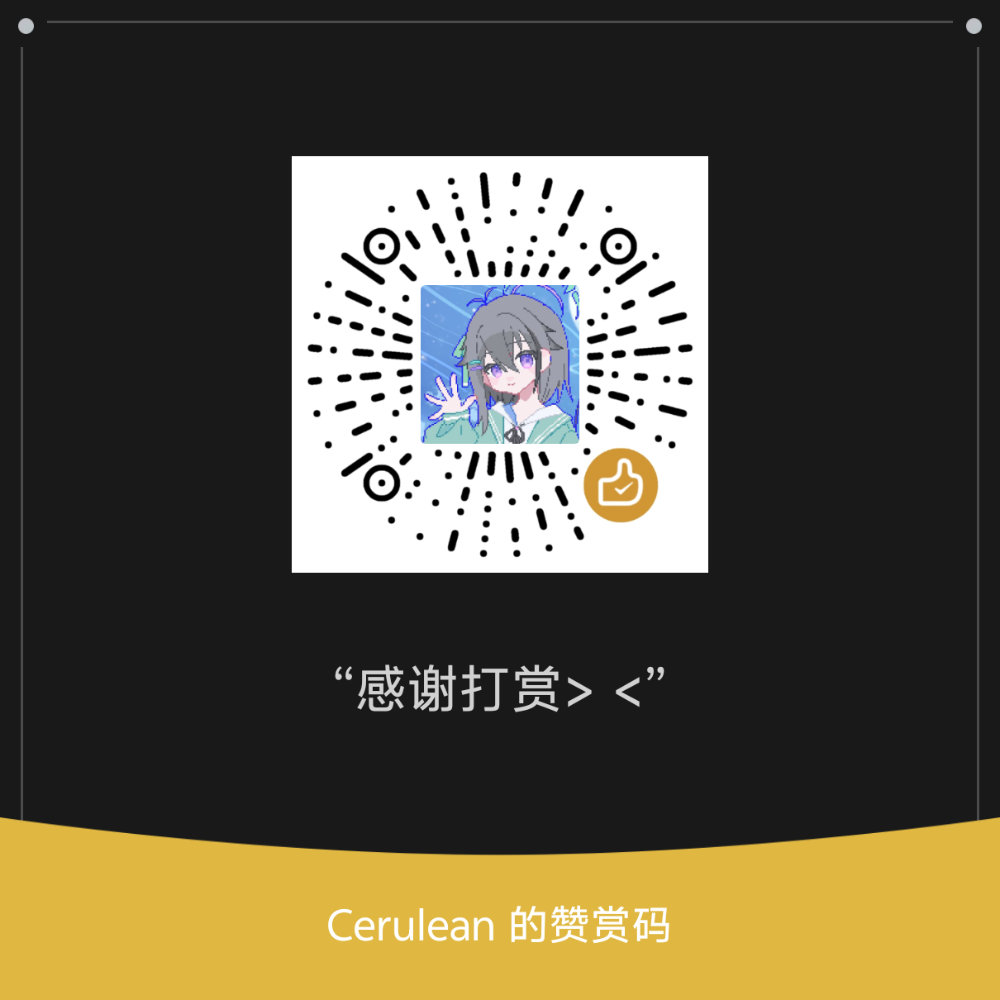

在网易云播放音乐，或打开本地音频。想先试试注音和查词？从示例开始。
选择歌曲后开始练唱
输入歌名、歌曲 ID 或网易云歌曲链接。
将为当前音频匹配歌词，不会切换正在播放的歌曲。
手动浏览后，点「回到当前歌词」可立即恢复跟随。
使用本机已安装的字体；原文即时预览，注音保持清晰易读的字体。
作词・作詞 黄家驹・黃家駒君と歌う You belong to me
刷新率跟随显示设备；播放时无固定 60 帧上限。 按住 Shift 再按 ← / →，以 10 毫秒微调。普通 LRC 的行内着色按时间估算；YRC 使用原始逐字时间。
在预设上调色会用这套配色替换「自定义」。亮色和深色分别保存。
悬停显示工具，滚轮调字号，拖右边缘调宽。钉住后，在歌词上停留三秒，点击小锁解锁。
每次启动自动检查正式版本，有更新时提示前往 GitHub 下载。
尚未设置
连接客户端时使用此目录。保存新路径后，下次连接生效。
保留 LRC 时间标签即可跟随播放。纯文本可逐行阅读。
在系统浏览器打开发布页，下载 Windows 便携包。
请确认网易云音乐所在的文件夹。自动识别的目录可重新选择，也可以粘贴 cloudmusic.exe 的完整路径。
可随时在「设置 → 连接与更新 → 网易云音乐路径」修改。暂时跳过也能使用本地练唱。
网易云音乐正在运行。确认后，咏伴会关闭并重新启动客户端，以启用本机双向同步。
当前播放会中断。如果客户端只缩到托盘或未响应，咏伴会结束该安装目录下的网易云后台进程。请先完成正在进行的下载或其他操作。
只修正当前歌曲、当前句中的这个词，不影响其他位置或歌曲。留空恢复歌曲读音或词典读法。

朝禊ASOGI用微信「扫一扫」赞赏作者
在网易云播放后自动选择最匹配的歌词。顶部可随时切换歌曲版本及逐字 / 逐行歌词。同步模式由网易云直接播放音频，支持客户端提供的播放、暂停和进度跳转；VIP 和网盘歌曲同样以客户端实际播放为准。
打开音频后，自动加载同名 .lrc / .yrc 和 .zh.lrc 译文。也可通过歌词工具手动导入。原文、注音和译文可以同时显示。
将指针移到要练的歌词行，点「分段」。在已有文字里插入 /，或直接改字。播放器上的「桌面歌词」可以显示或隐藏浮窗；勾选旁边的「钉住」让鼠标穿透。悬停歌词三秒后点小锁即可解锁，再用滚轮调字号或右键改样式。
点击歌词默认跳到句首并播放，可在「设置」关闭自动播放。手动浏览默认持续停留，点击「回到当前歌词」恢复跟随；设置中可开启 4 秒自动返回。注音、译文、罗马音、粤拼与词典在「练唱谱」旁直接切换；来源和时间轴说明见左栏「播放信息」。按 L 开启单句循环。按 [ 设置 A 点，按 ] 设置 B 点。← / → 调整 0.1 秒，Shift + ← / → 调整 0.01 秒，↑ / ↓ 切换歌词行。
「日语罗马音」默认关闭，开启后日语假名注音改为罗马音，纯假名词也显示罗马音；英语音标不变。开关自动保存，注音总开关仍可隐藏所有注音。勾选词典模式，点击词汇查看释义。Shift + 点击歌词仍可跳转。日语读法使用词法分析，英文为美式宽式音标；特殊唱法可在词典面板修正。
「中文粤拼」默认关闭，开启后中文原文上方显示带 1–6 声调数字的粤语读音（例如 ngo5），支持简繁体。中文译文不注音；日语和英语沿用各自读法。在词典模式点击汉字可比较候选或修正粤拼。
侧栏「最近播放」记录实际播放过的歌曲，可搜索并直接播放；「曲库收藏」可添加本地文件、搜索网易云歌曲或粘贴歌曲链接，并在本地创建歌单。歌单可混合两种来源，不修改网易云账号收藏。移出列表只移除记录，不删除音频；文件移动后可重新定位。
歌词来自网易云，中文词义来自有道；点击“补充中文机译”才会把缺少译文的歌词发送给 Google 翻译；不可用时使用 MyMemory。便携版默认通过国内加速检查 GitHub 正式版，可在「连接与更新」切换下载源。关闭主窗口默认收进托盘；右键托盘图标，选择「退出咏伴」即可退出。
加入本地曲库收藏，不修改网易云账号歌单。